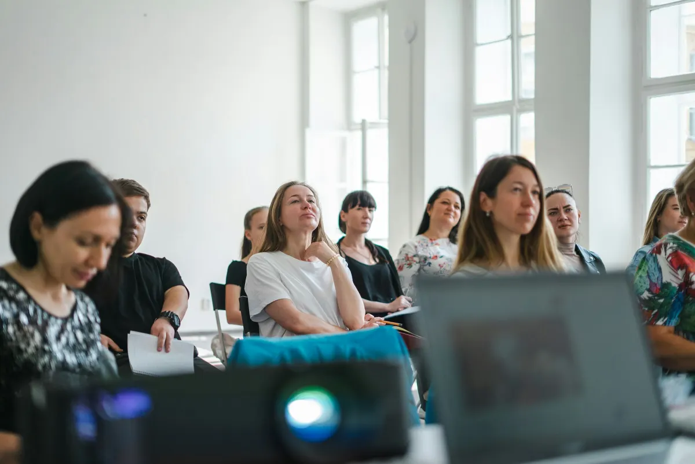
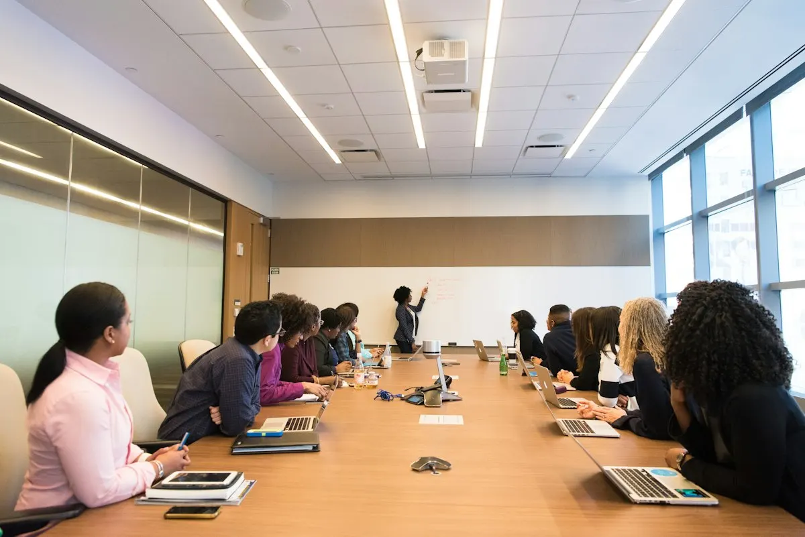
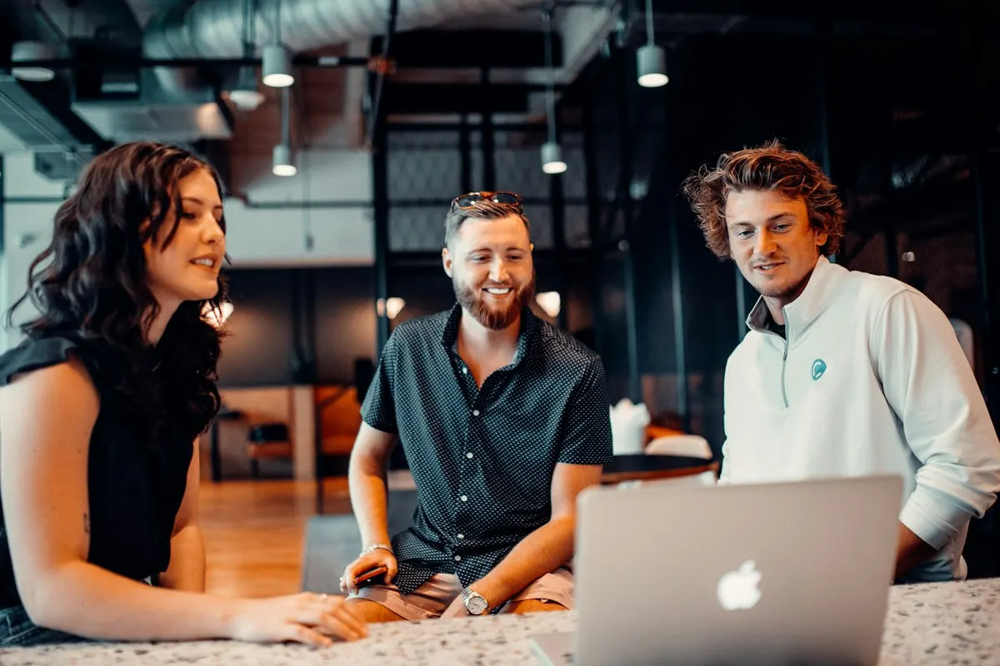
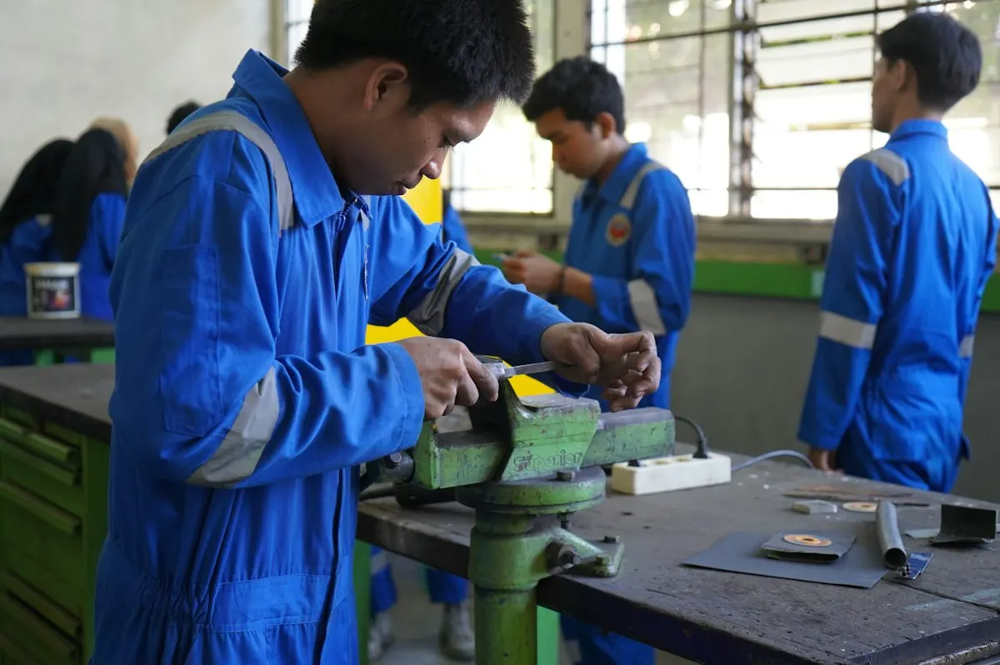
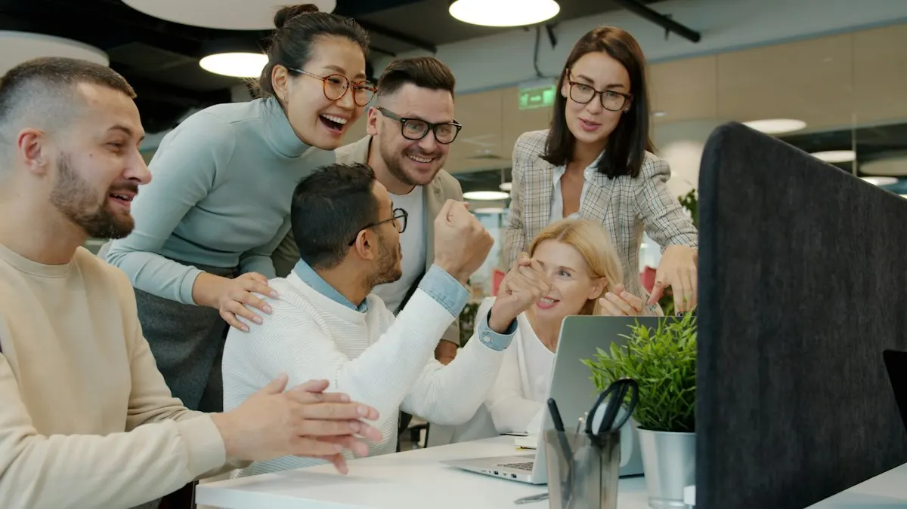

Seit 2002 · Personalentwicklung aus Wien
Menschen, die gern zur Arbeit kommen.
Wir unterstützen Unternehmen dabei, ein Umfeld zu schaffen, in dem Mitarbeitende sich morgens auf die Arbeit freuen, ihr Bestes geben und abends erfüllt nach Hause gehen.

- 35 JahreBerufserfahrung in Wirtschaft, Politik und Bildung
- 24 Jahreselbständig in Beratung, Training und Mediation
- 19 JahreLehrtätigkeit am FH Campus Wien
- 25+praxiserprobte Workshops und Programme
Unternehmen und Institutionen, die mit uns arbeiten
- ÖBB
- PORR
- AMS
- Opel Wien
- MAN
- RBI Group IT
- FH Campus Wien
- Wittmann Battenfeld
- Ardex
- Bildungsdirektion Wien
- Sozialministerium
- lawyers & more
Unsere Haltung
Wir glauben an eine Arbeitsplatz-(R)Evolution: Menschen arbeiten, nicht weil sie müssen, sondern weil sie wollen.
Menschen verlassen selten ein Unternehmen. Sie verlassen ihre Führungskräfte. Deshalb setzen wir dort an, wo Kultur entsteht: bei Haltung, Kommunikation und Führung.
Unsere Geschichte
Erfahrung aus 35 Berufsjahren. Für Ihr Unternehmen.
Von der Europapolitik in Wien, Brüssel und Linz in die Personalentwicklung: Gruppe 42 verbindet den Blick für Organisationen und Institutionen mit über zwei Jahrzehnten Praxis in Training, Beratung und Mediation.
Qualifikationen
- Wirtschaftsstudium, Universität Linz
- Studienlehrgang Training und Bildungsmanagement, Universität Linz
- Human Resources Management, Open University
- Ausbildung zur Mediatorin
- Mitglied der WKO Wien, Fachgruppe Unternehmensberatung
- 1991Europapolitik in WienAssistentin in der Österreichischen Gesellschaft für Europapolitik.
- 1993BrüsselAssistentin bei der EFTA Surveillance Authority.
- 1995LinzEU-Referentin am Institut für Sozial- und Wirtschaftswissenschaften.
- 1998Europäisches ParlamentParlamentarische Mitarbeiterin von Dr. Maria Berger, Abgeordnete zum EU-Parlament.
- 2002Der Schritt in die SelbständigkeitUnternehmensberaterin, Mediatorin und Führungskräftetrainerin. Seither begleiten wir Unternehmen, Institutionen und ihre Menschen.
- 2007FH Campus WienLektorin für Personalmanagement, Führungstraining und Kommunikation.
- 2021DenkanstößeStart des Blogs über Führung, Generationen und Unternehmenskultur.
- HeutePartnerin für Organisationen jeder GrößeProgramme für Führungskräfte, Mitarbeitende, Lehrlinge und Teams, vom Familienbetrieb bis zu ÖBB, PORR und dem AMS.
Leistungen
Drei Hebel für eine Kultur, in der Menschen bleiben.
-
Personalentwicklung
Persönliche, methodische und Beziehungskompetenzen stärken, von der Führungsebene bis zum ersten Lehrjahr.
- Führungskräfte
- Mitarbeitende
- Lehrlinge
- Teams
-
Unternehmenskultur
Vision und Werte, die gelebt werden. Eine Kommunikation, die Vertrauen schafft. Führung, die begeistert.
- Vision & Werte
- Kommunikation
- Führung
-

Employer Branding
Eine Arbeitgebermarke, die die Wahrheit sagt. Von der Strategie über die Verankerung bis zur laufenden Betreuung.
- Strategie
- Implementierung
- Management
Für wen
Workshops und Programme für jede Ebene.
-

Führungskräfte 10 Angebote · Selbstkompetenz, Beziehungskompetenz, Strategische Kompetenz -

Mitarbeitende 11 Angebote · Selbstkompetenz, Beziehungskompetenz, Methodenkompetenz -

Lehrlinge & Ausbilder:innen 15 Angebote · Für Lehrlinge, Peer-Mediation, Für Ausbilder:innen Förderung möglich -

Teams 3 Angebote
So arbeiten wir
Maßgeschneidert statt von der Stange.
- ErstgesprächUnverbindlich: Ziele, Herausforderungen und Wünsche besprechen und klären, ob wir zueinander passen.
- ProgrammWir stellen Workshops, Coaching und Moderation passend zu Ihrem Unternehmen zusammen.
- WorkshopsViel Praxis, wenig Frontalvortrag. Übungen und Beispiele, die sofort im Alltag wirken.
- BegleitungTeam Check-ups, Reflexion und Coaching sichern, dass das Gelernte bleibt.
Stimmen
„In nur sechs Wochen sind wir vom ersten Schritt zu unserer Vision gekommen. Sensationell.“
„Anfangs hatte ich die Befürchtung, dass es wieder einer dieser langweiligen Frontalvorträge werden würde. Weit gefehlt!“
„Die Workshops waren sehr kurzweilig, abwechslungsreich und perfekt an die Teilnehmer angepasst.“
„Sie schafft es, Teilnehmende unterschiedlicher Hierarchieebenen abzuholen und mitzureißen.“
Über Ingrid
Mag. Ingrid Nirnberger
Unternehmensberaterin, Mediatorin und Führungskräftetrainerin
Humorvoll, authentisch und mit dem Blick für das, was im Alltag wirklich funktioniert. So beschreiben Teilnehmende ihre Workshops. Ingrid verbindet Wirtschaftsstudium, Mediation und Jahre in der Europapolitik mit über zwei Jahrzehnten in der Erwachsenenbildung.
- Seit 2002selbständig in Beratung und Training
- Seit 2007Lektorin am FH Campus Wien
- Mediatorinfür Konflikte im Team und zwischen Ebenen
- Brüssel & WienEFTA, EU-Parlament, Europapolitik
Ihr Unternehmen ist einzigartig. Ihre Lösung auch.
Vereinbaren Sie ein unverbindliches Gespräch. Wir hören zu, stellen Fragen und sagen Ihnen ehrlich, ob wir die Richtigen für Sie sind.